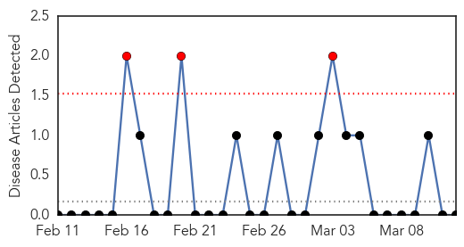
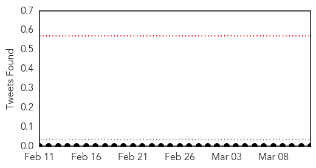
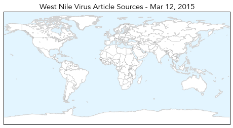
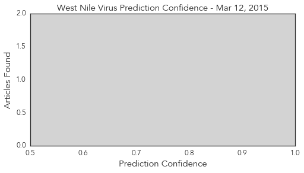

West Nile Virus
30-Day Web Trend
3 alerts, 0 warnings

30-Day Twitter Trend
1 alerts, 0 warnings

Article Locations
Article Confidences
Top Articles:
-
No articles found for Mar 12, 2015
Top Tweets:
-
No tweets found for Mar 12, 2015
Hepatitis
30-Day Web Trend
7 alerts, 3 warnings

30-Day Twitter Trend
1 alerts, 0 warnings

Article Locations

Article Confidences

Top Articles:
- 0.948
- Pallisa registers more than 1,300 hepatitis B cases
- 0.871
- WHO urges stepped-up battle against hepatitis B
- 0.860
- WHO Urges Stepped-up Battle against Hepatitis B — Naharnet
- 0.838
- UN guidelines aim to simplify care for millions infected with hepatitis B
- 0.730
- WHO issues its first hepatitis B treatment guidelines
- 0.636
- WHO urges stepped-up battle against hepatitis B
- 0.560
- The Bay Area Reporter Online
Top Tweets:
- 0.609
- Worldwide, some 240 million people have chronic hepatitis B virus infection with the highest rates of infection in Africa and Asia HepB